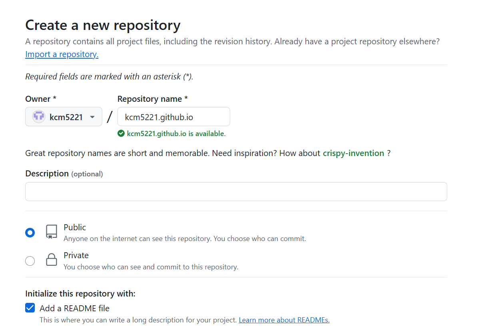
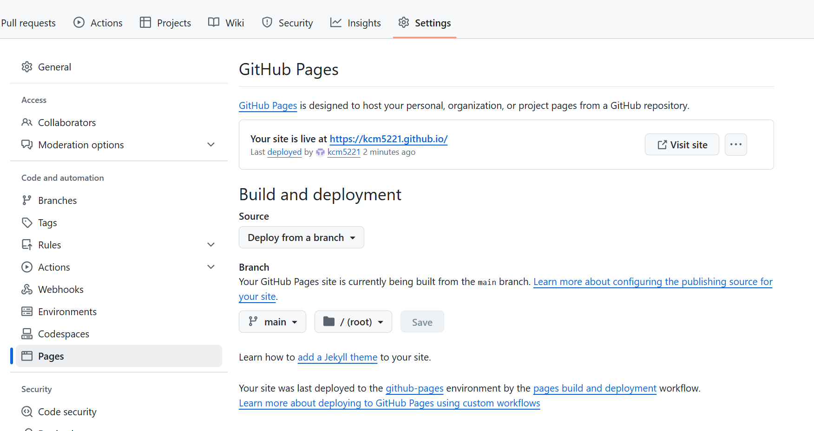
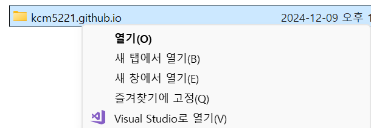
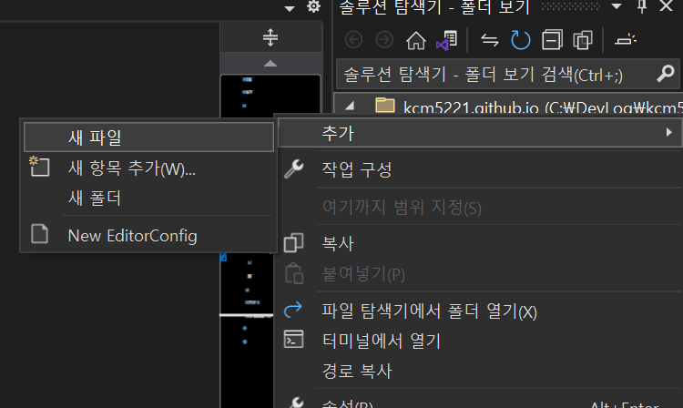

깃허브 블로그 만들기 Part 1
1. 깃허브 페이지 생성
1-1. 깃허브 로그인 후, 리포지토리 생성
블로그를 만들기 위해서는 일반 프로젝트 페이지가 아닌 사용자 페이지로 만들어야해서 [닉네임.github.io] 로 만들어야 한다그리고 public, Add a READEME file을 체크한다

1-2. 리포지토리 Settings
생성한 리포지토리 Settings의 Pages에서 Source, Branch를 사진처럼 하면 된다
2. Index.html 생성
2-1. 깃허브 Desktop과 비주얼 스튜디오를 설치한다
그 후, 깃허브Desktop에서 clone을 하면 생성되는 폴더를 비주얼스튜디오로 연다
2-2. index.html 파일 추가
비주얼스튜디오가 열리면 솔루션탐색기에서 우클릭, 파일추가를 하고 index.html을 만든다(※ index.html이 아니면 깃허브 페이지 생성이 안된다고함)

2-3. 코드 넣기
<!DOCTYPE html>
<html lang="ko">
<head>
<title>Blog Title</title>
<meta charset="utf-8" />
</head>
<body>
아무말
</body>
</html>
작성 후 저장, 깃허브 push 해주면 이제 깃허브를 통한 웹페이지가 만들어진다(※ push 하기 전에 .vs폴더를 ignore해야 한다)